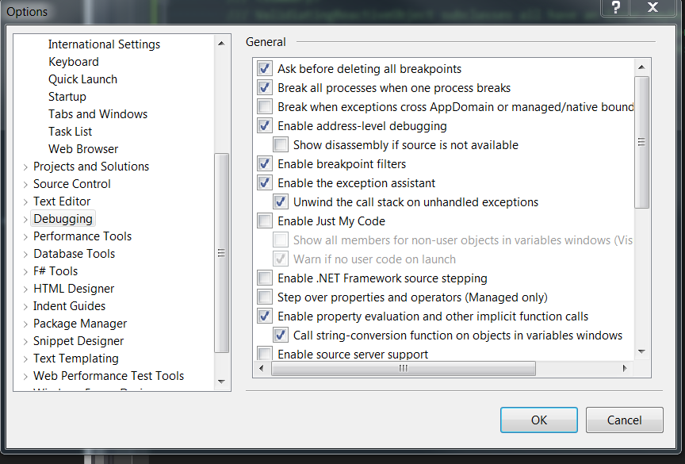
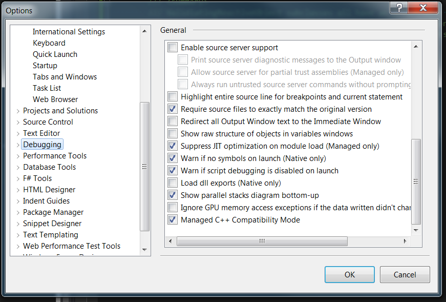

Visual Studio "Could not copy" .... during build
I keep getting this error during the build of my VS2012 C# project
Error 41 Could not copy "obj\Debug\WeinGartner.WeinCad.exe" to "bin\Debug\WeinGartner.WeinCad.exe". Exceeded retry count of 10. Failed. Error 42 Unable to copy file "obj\Debug\WeinGartner.WeinCad.exe" to "bin\Debug\WeinGartner.WeinCad.exe". The process cannot access the file 'bin\Debug\WeinGartner.WeinCad.exe' because it is being used by another process.
Now I've figured out that killing the process
Weingartner.WeinCad.vhost.exe
works (sometimes ) but this is getting on my nerves. Any way to stop this happening at all?
My debugger settings are

Answer
I have encountered similar error messages in Visual Studio 2013.
Mostly, I have found that this situation has occurred when a debug process was halted because of an exception.
When clean+build has not resolved this problem for me, I have had success by doing the following:
- Closing Visual Studio
- Deleting the
binandobjfolders, and - Reopening Visual Studio.
This "bug" has existed since Visual Studio 2003.
Finally, I have also found that I can often overcome this problem by simply renaming the executable file and then deleting it.
Suggest
In Visual Studio Premium 2013 (Update 3), I solved this with a pre-build one- liner:
(if exist "$(TargetDir)*old.pdb" del "$(TargetDir)*old.pdb") & (if exist "$(TargetDir)*.pdb" ren "$(TargetDir)*.pdb" *.old.pdb)
This gracefully deletes any old PDB files (if it can), then renames anything
that's left with a .old.pdb extension. A nice side effect is that if the old
PDB is still locked, it just adds another .old piece to the filename, and they
all get cleaned up next time you restart Visual Studio and do a build.
For example, build/debug session 1 leaves MyProject.pdb locked.
The next time you build:MyProject.pdb --> MyProject.old.pdb
Then, build/debug session 2 is started, and both MyProject.pdb and
MyProject.old.pdb are still locked:MyProject.old.pdb --> MyProject.old.old.pdbMyProject.pdb --> MyProject.old.pdb
Finally, restarting Visual Studio and doing a fresh build will get rid of both of these, and continue the process as usual.